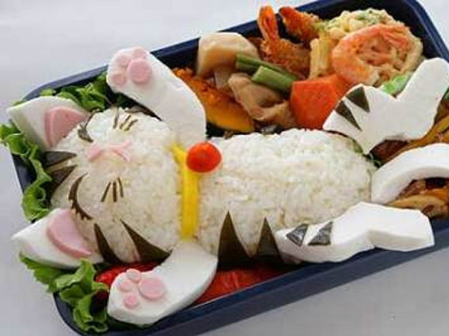

Community BENTOGO: Neko Bento.
This week in our creative Bento spotlight is Neko Bento!

A cute cat thememd Bento to brighten up your day
This week in our BENTOGO community spotlight is Mr. Ben Togo from Granville with his Neko Bento.
Clever use of Kamaboko, a type of cured surimi used in Japan, Ben created a realistic cat with a combination of rice and nori sheets. Bundled with a selection of tempura and Chikuzenni makes this the perfect bento lunch box for kids and adults alike.
"My daughter is a picky eater, so this is one of the ways I can get her to eat her food." says Ben "Her friends also like the Neko Bento as well and some parents have come to me and asked me how to make it"
That's it for this week's community spotlight. Know of other creative Bento makers in your community? Send us an Email and we will showcase it during our weekly spotlight!
Back to Newsfeed